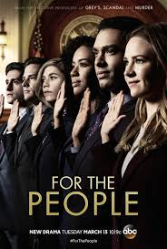

LEGAL DRAMA
Suits (2011-2019)
"Two lawyers. One degree."

While running from a drug deal gone bad, brilliant young college dropout Mike Ross slips into a job interview with one of New York City's best legal closers, Harvey Specter. Tired of cookie-cutter law-school grads, Harvey takes a gamble by hiring Mike on the spot after recognizing his raw talent and photographic memory. Mike and Harvey are a winning team. Although Mike is a genius, he still has a lot to learn about law; and while Harvey might seem like an emotionless, cold-blooded shark, Mike's sympathy and concern for their cases and clients will help remind Harvey why he went into law in the first place. Mike's other allies in the office include the firm's best paralegal Rachel and Harvey's no-nonsense assistant Donna. Proving to be an irrepressible duo and invaluable to the practice, Mike and Harvey must keep their secret from everyone including managing partner Jessica and Harvey's archnemesis Louis, who seems intent on making Mike's life as difficult as possible.
Genres : Comedy,Drama
No. of Seasons: 8
Available on Netflix and Amazon Prime
Review: 8.5/10 ⭐
How To Get Away With Murder (2014- )
"You are messing with the wrong bitch!"

A group of ambitious law students and their brilliant criminal defense professor become involved in a twisted murder plot that promises to change the course of their lives.Annalise Keating. For her students, she's a great teacher. And every year, she selects four of them to work with her as lawyers. But this year, when everyone arrives at school in the first day, Lila Stangard, a young girl, is already missing. They dont know it, but the life of everyone close to Annalise's office is going to fall into a dark and unending series of murders.
Genres : Crime,Drama,Mystery,Thriller
No. of Seasons: 6
Available on Netflix
Review: 7.7/10 ⭐
Law & Order (1990-2010)
"Meet the Dectectives and Prosecuters with a duty to bring Law & Order to New York City"
The show follows a crime, ususally adapted from current headlines, from two separate vantage points. The first half of the show concentrates on the investigation of the crime by the police, the second half follows the prosecution of the crime in court.
Genres : Crime,Drama,Mystery,Thriller
No. of Seasons: 20
Available on Amazon Prime
Review: 7.7/10 ⭐
For the People (2018-2019)

Set in the Southern District of New York (SDNY) Federal Court, aka "The Mother Court," the legal drama follows brand new lawyers working for both the defense and the prosecution as they handle the most high profile and high stakes cases in the country - all as their personal lives intersect
Genres : Drama
No. of Seasons: 2
Available on Disney+hotstar
Review: 7.2/10 ⭐
Law & Order : Los Angeles (2010-2011)
"Welcome to the Wild West."
Law & Order: LA" fuses classic ripped-from-the-headlines storytelling with the distinctive backdrop of LA - delving into the unique attitudes, cultures and crimes of the West Coast.The drama follows Detectives Ricardo Morales (Alfred Molina, "An Education," "The Da Vinci Code," "Spiderman 2") and Tomas "TJ" Jaruszalski (Corey Stoll, "Midnight in Paris") as they pursue cases through the diverse City of Angels. As members of the Los Angeles Police Department's elite Robbery Homicide Division, Morales, a former deputy district attorney, has returned to the police force after becoming frustrated with the system, while TJ, who grew up the son of an Oscar-winning Polish cinematographer, knows too well the dark underside that is behind-the-scenes Hollywood.
Genres : Crime,Drama,Mystery
No. of Seasons: 1
Available on Amazon Prime
Review: 6.7/10 ⭐
Back